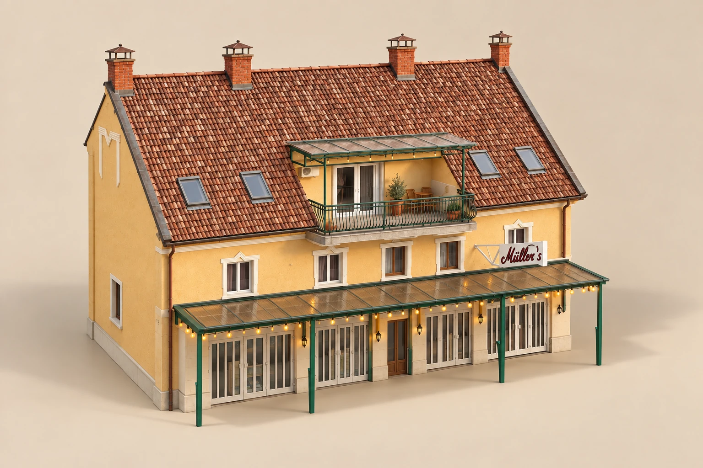
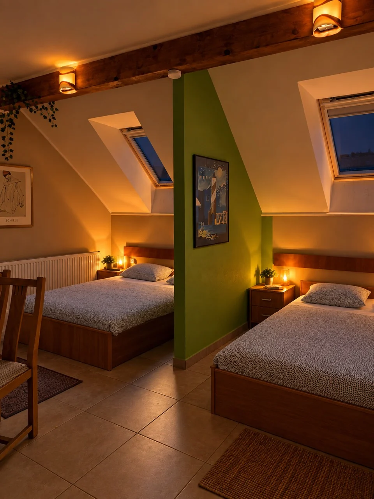
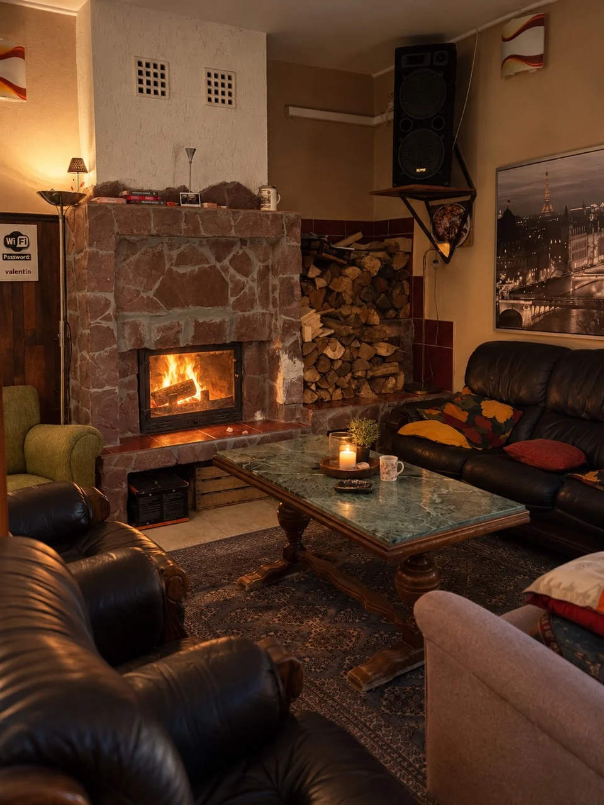
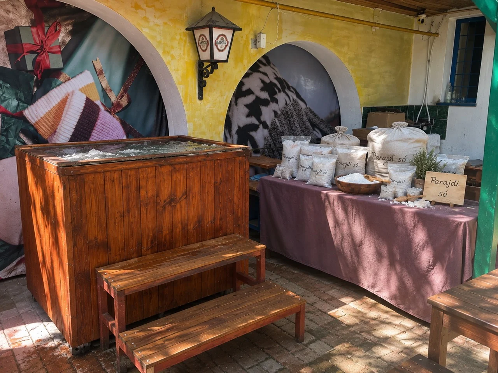
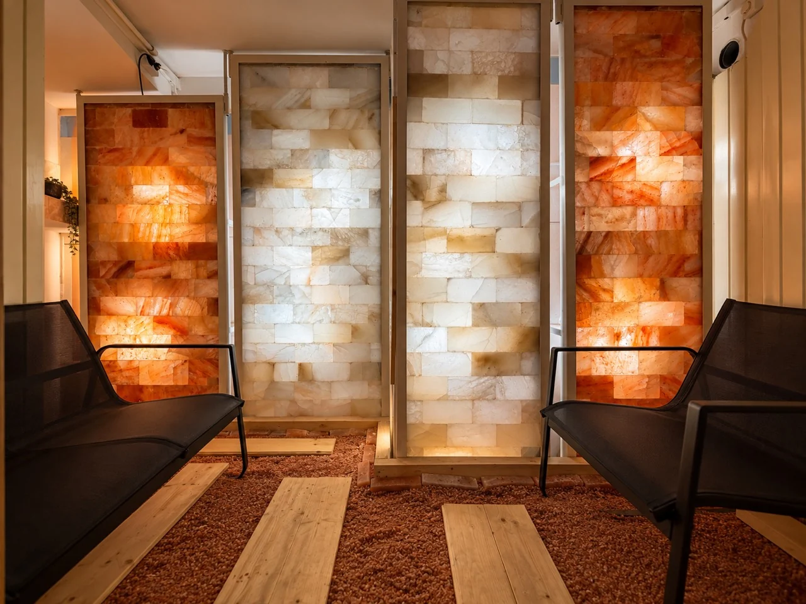
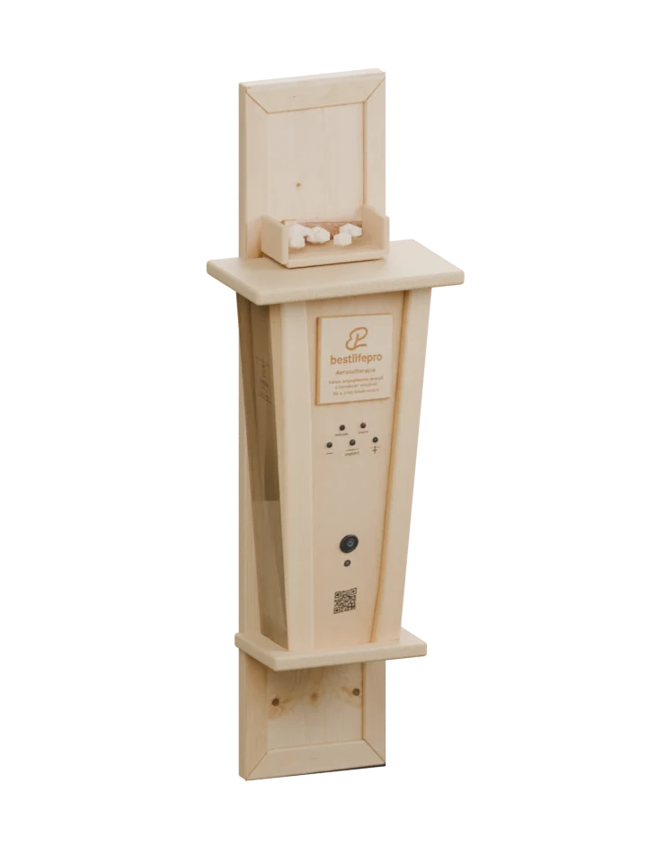
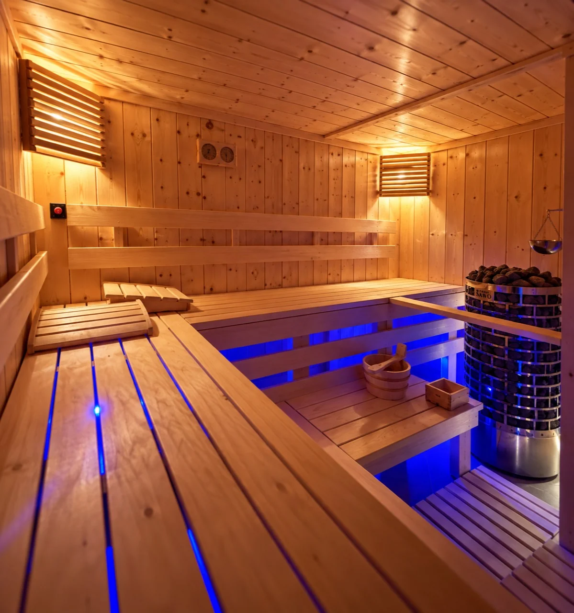
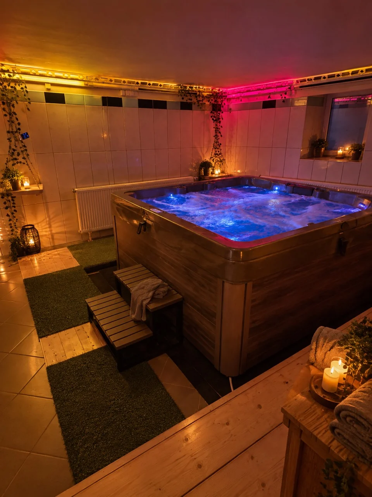

Müllers 2
Privát wellnessház az egész társaságnak.
„Az egész ház.
Csak nektek.”
Mi lenne, ha egy hétvégére az egész hotel csak a tiétek lenne?
Péntek. Megérkeztek, elfoglaljátok a szobákat. Valaki már bontja a bort. Végre mindenki együtt van, és ma este senkinek nem kell hazamennie.
Amikor egy apartman már kevés, de a hotel wellnessén sem szeretnétek idegenekkel osztozni. Itt egy saját privát wellnessház várja az egész társaságot.
Végre mindenki
egy helyen.
Születésnap, családi találkozó vagy egy régóta halogatott baráti hétvége? 10–16 fővel, de akár 30-an is együtt lehettek a 600 m²-es házban. Este a kandallónál találkoztok, másnap újra együtt indul a nap.
A hétvége már vár benneteket.
A fa bekészítve, a jakuzzi felmelegítve. Az árban naponta egy előre egyeztetett, legfeljebb 4 órás privát wellness-blokk is benne van: szauna, parajdi sós merülő, sószoba és jakuzzi. Ez idő alatt csak ti használjátok.

Szobák
Este nem kell külön apartmanokba szétszélednetek. Csak felmentek a szobátokba.
Másnap közös kávé. Vasárnap kijelentkezés 13:00-kor.

Kandallós
társalgó
Valaki még tölt egy pohár bort. A tűz ropog, a beszélgetés marad.
Csak a társaságotok. Ma este nem kell taxit hívni.

Udvari merülő
A szauna után jöhet a parajdi sós hidegmerülő. Aztán vissza a melegbe.
Előtte zuhanyozzatok le. Ki lesz az első?

Sószoba

Nálunk a só nem csak a falon van.
Valódi són jártok, sófalak fényében pihentek. A Bestlifepro profi sógenerátora finomra őrölt sót juttat a levegőbe.
Két szaunázás között leülhettek.
A sófelhő szemléltető animáció.

Szauna
Most senki idegenhez nem kell alkalmazkodnotok. A szauna is a tiétek.
A napi privát wellness-blokk része.

Jakuzzi
Este már nem kell sehova mennetek. Meleg víz, körülöttetek pedig csak azok, akikkel idejöttetek.
Utána még visszaülhettek a kandallóhoz.
Melyik hétvége
legyen a tiétek?
Időpontok hamarosan Bevezető alapár: 29 998 Ft/fő két éjszakára — 14 999 Ft/fő/éj. Minimum 10 fő és 2 éjszaka: 299 980 Ft a társaságnak. 2026 végéig, normál időszakokra; kiemelt időszakokban eltérő ár.